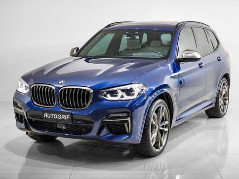

BMW X3
Modelo já sai completo desde a versão de entrada
Pouca gente sabe, mas o BMW X3, o SAV (Sport Activity Vehicle) da BMW já é fabricado em solo nacional. Desde agosto, o modelo é produzido na fábrica do BMW Group Brasil em Araquari (SC), nas versões BMW X3 xDrive20i e X3 xDrive20i X Line, já no ano modelo 2015/2016. Aproveitando o momento bastante oportuno, trazemos a avaliação da versão de entrada do SAV X3. A título de informação, na mesma fábrica são feitos os BMW Série 3, BMW X1 e BMW Série 1.
SUV ou SAV
Quando o X3 surgiu, a BMW aproveitou a oportunidade para diferenciar o seu produto, dos demais concorrentes do mercado. Adotando uma estratégia diferente, a marca apostou num produto mais esportivo, e menos fora-de-estrada. Na prática, grande parte dos clientes que procuram esse tipo de veículo, dificilmente fazem um uso intenso no fora de estrada. Aliás, o uso é bastante esporádico. Justamente por isso, para a BMW escolheu apostar na esportividade para uso urbano e rodoviário, em vez da capacidade fora de estrada. Assim, o X3 já nasceu com um SAV (Sport Activity Vehicle), em vez da tradicional proposta dos SUV (Sport Utility Vehicle).